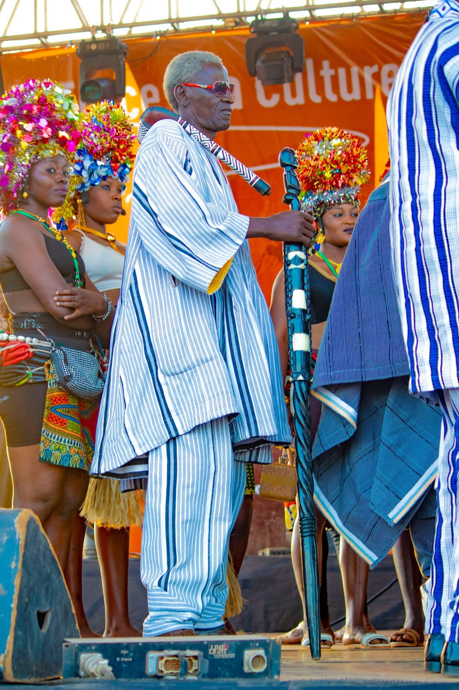
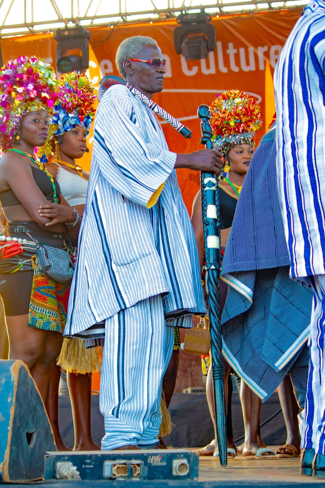

 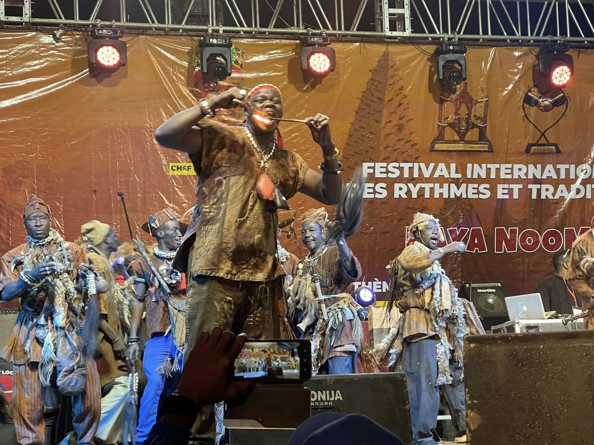
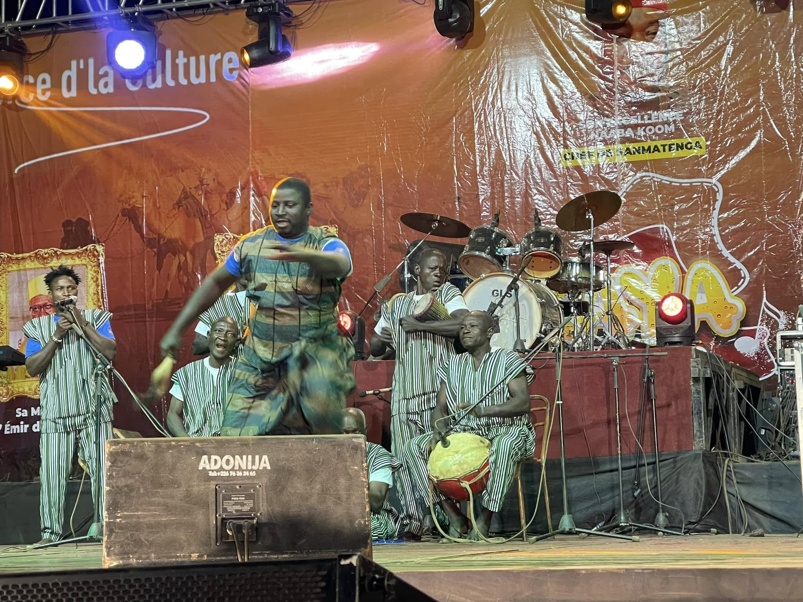
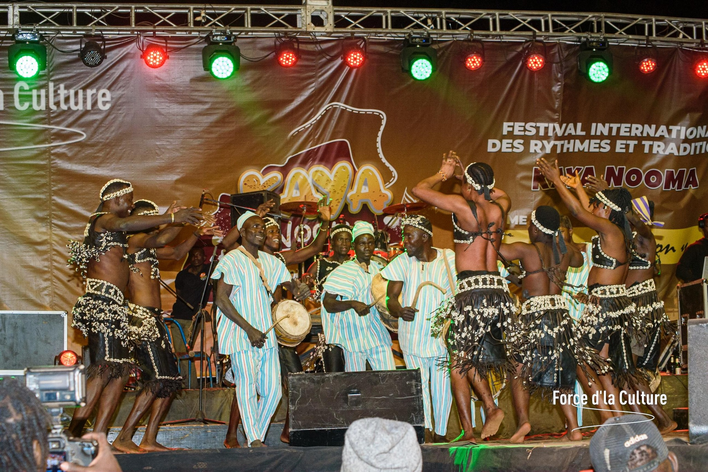
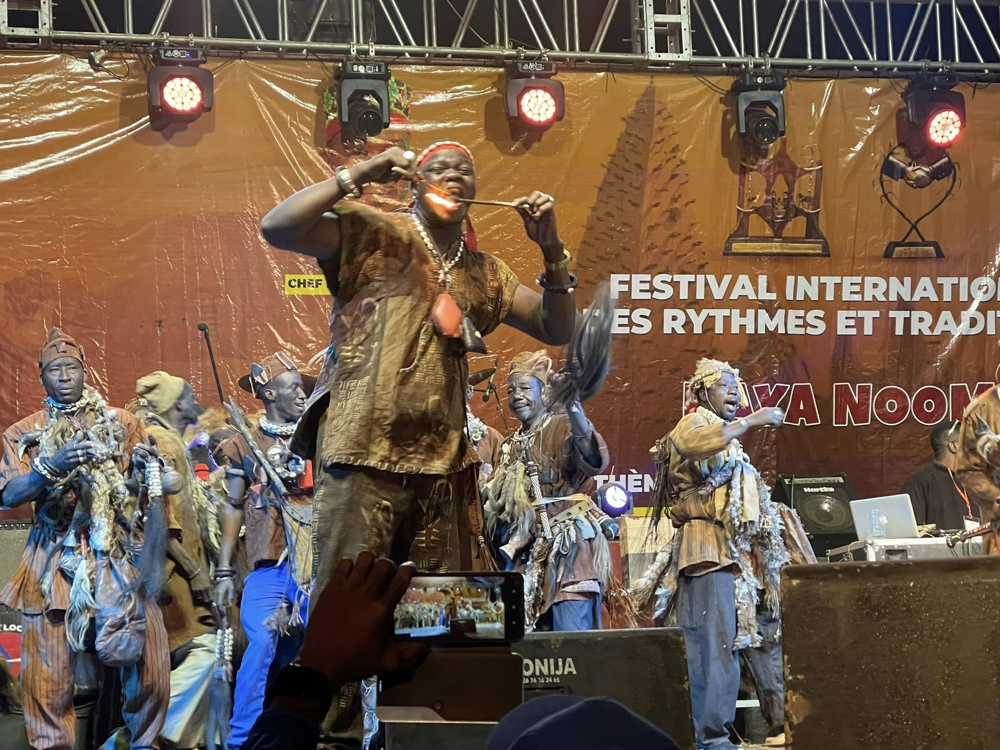
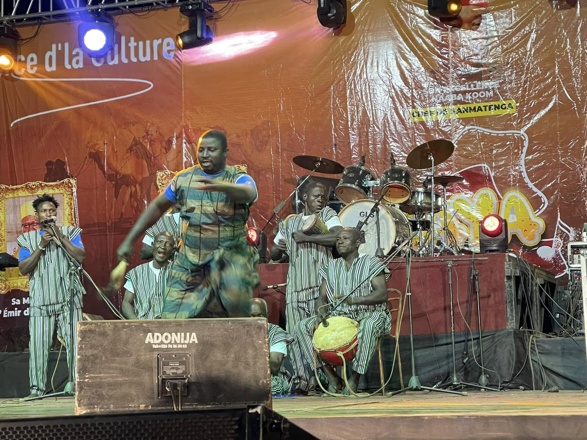
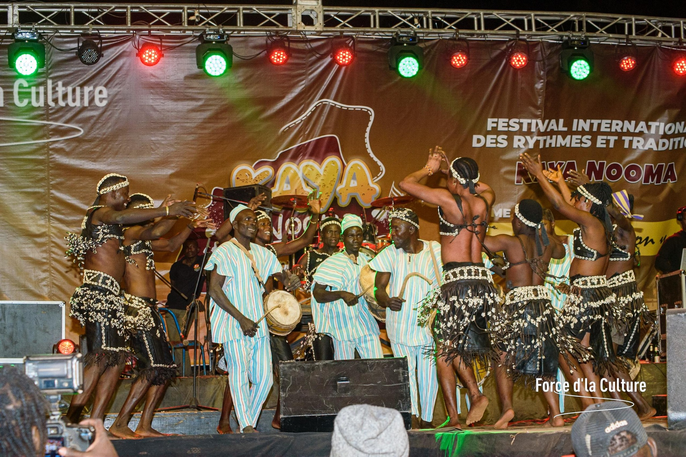

 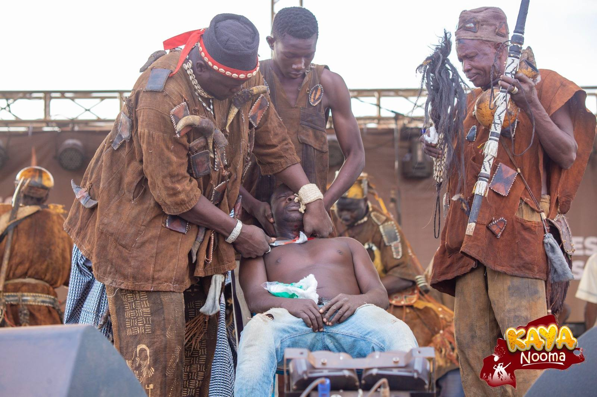
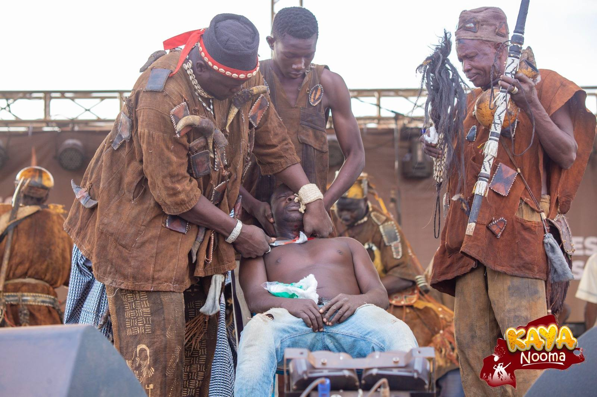
Le Festival Kaya Nooma est un rendez-vous culturel incontournable au Burkina Faso, célébré chaque année en décembre dans la région de Sanmatenga. Il met en lumière les danses folkloriques, les musiques traditionnelles et les rituels communautaire de tout le pays.
Cet événement rassemble toutes les ethnies du territoire dans une harmonie artistique vibrante. Les visiteurs s’immergent dans les richesses ancestrales du patrimoine burkinabè et découvrent une palette de traditions transmises de génération en génération.
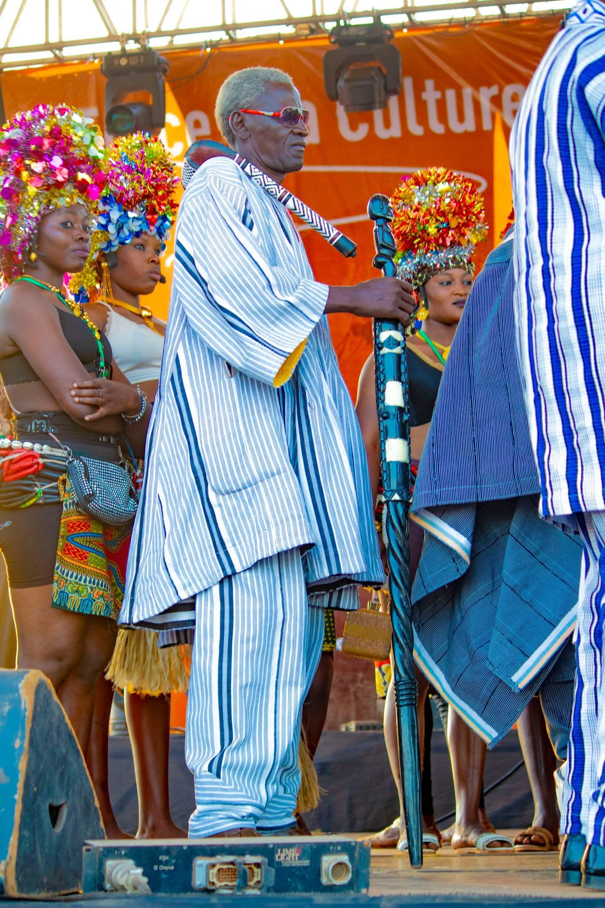
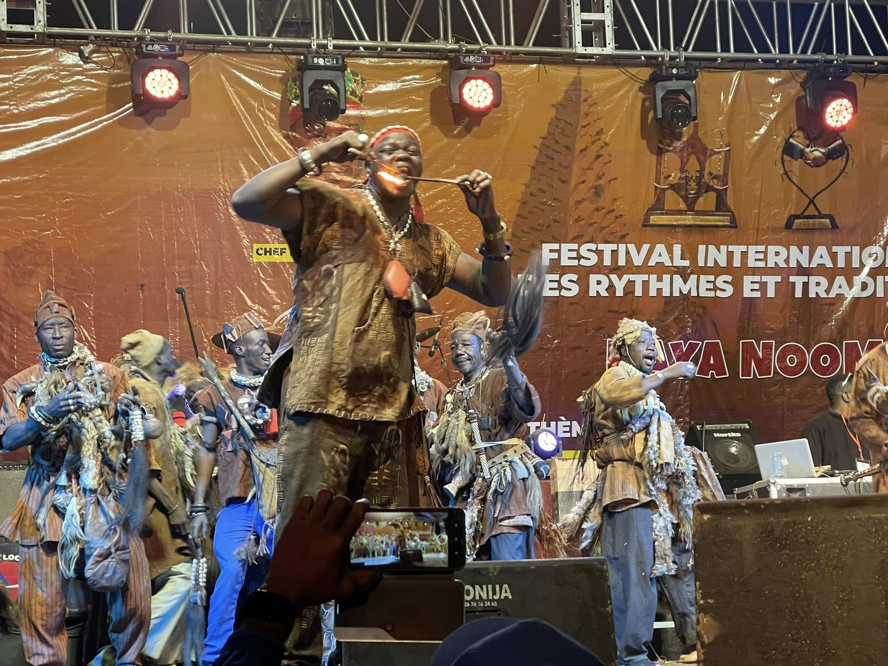
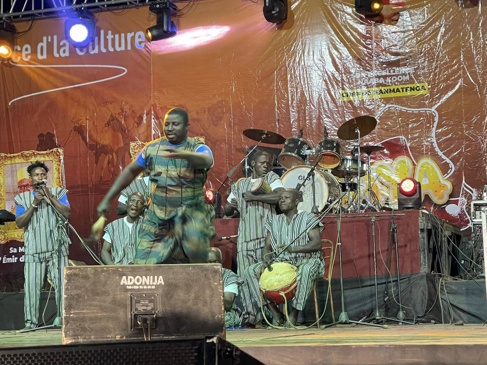
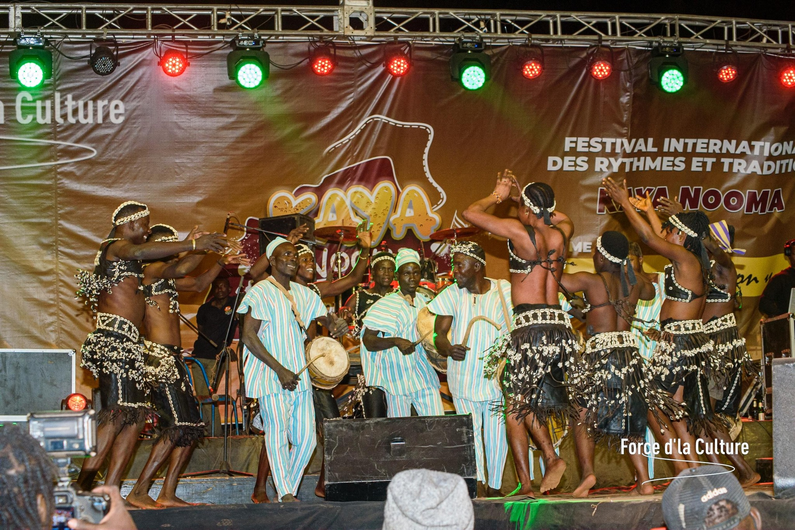
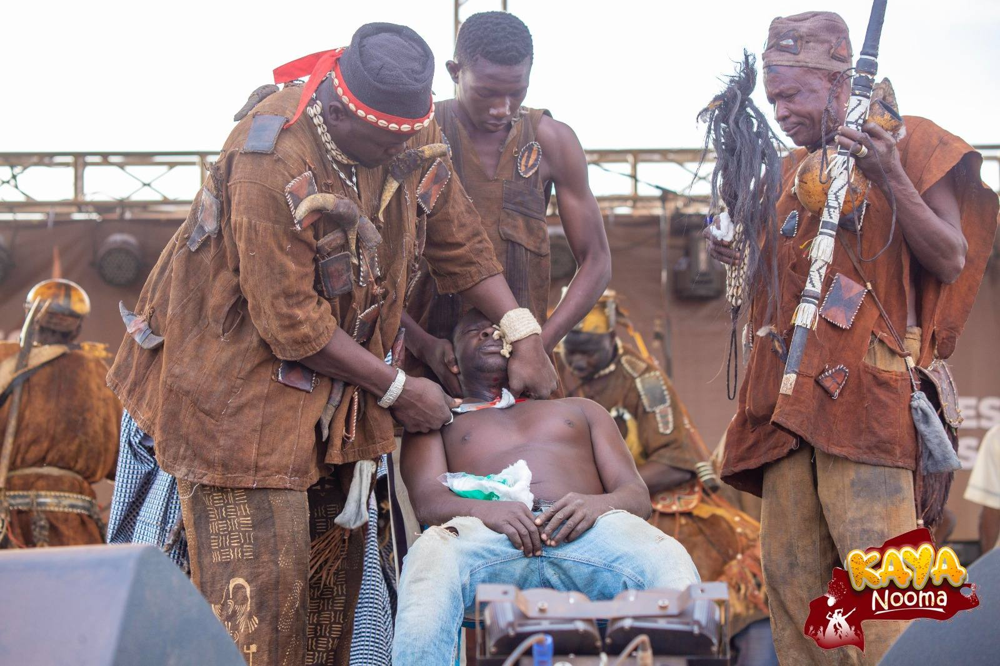